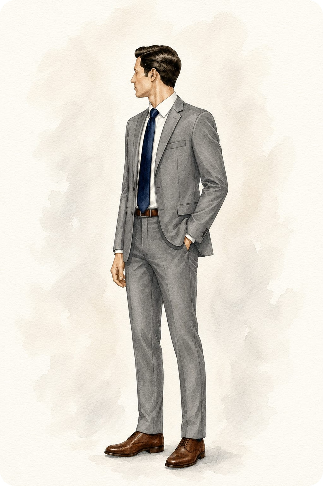
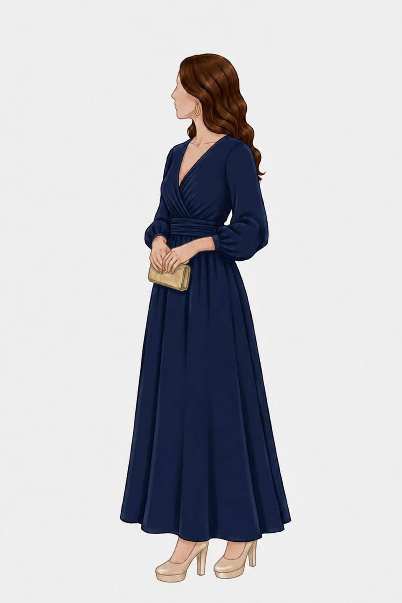

Qvaerens Veritatem Inveni · Área Exclusiva
Guia dos Padrinhos
& Madrinhas
31 de Outubro de 2026
Mensagem dos Noivos
Querido Padrinho
Grande regozijo é compartilhar convosco nossa caminhada. As palavras não são suficientes para agradecer todo o carinho, amizade e apoio que recebemos.
Agora, com grandiosíssima felicidade, o convidamos para partilhar do momento mais aguardado de nossas vidas: a nossa união.
Queremos que você se sinta elegante para o grande dia. Por isso, escolhemos um traje clássico e sofisticado composto por terno na cor cinza chumbo, camisa social branca e sapato social marrom.
Para complementar o traje, sugerimos um cinto na mesma tonalidade do sapato, criando uma composição harmônica e elegante.
Como adereço para o grande dia, use esta gravata e flor de lapela como símbolo do nosso afeto e carinho por você.
Com afeto e gratidão, Daniel & Franciellen Maria
Dress Code Oficial
Composição do Traje
Cinza Chumbo
Terno
Branco Clássico
Camisa Social
Azul Marinho
Gravata (Presente)
Marrom Social
Sapato & Cinto
Terno
Cinza Chumbo
Corte clássico, elegante e sóbrio
Camisa
Social Branca
Lisa, tecido estruturado de alfaiataria
Sapato & Cinto
Social Marrom
Cinto na mesma tonalidade do calçado
Acessórios Nobres
Gravata & Flor de Lapela
Presenteadas pelos noivos com muito afeto

Ilustração Oficial · Composição do Traje do Padrinho
Liturgia & Cerimonial
Orientações para o Grande Dia
“Pedimos com muito carinho algo bastante especial: a sua oração em prol da nossa união, do grande dia e da vida que construiremos juntos.”
Mensagem dos Noivos
Querida Madrinha
Grande regozijo é compartilhar convosco nossa caminhada. As palavras não são suficientes para agradecer todo o carinho, amizade e apoio que recebemos.
Agora, com grandiosíssima felicidade, a convidamos para partilhar do momento mais aguardado de nossas vidas: a nossa união.
Queremos que você se sinta bela. Por isso, escolhemos um vestido longo, clássico e elegante na cor azul marinho.
Quanto ao modelo, sinta-se à vontade para escolher aquele que mais lhe agradar e servir.
Como adereço para o grande dia, use este delicado bracelete como símbolo de nosso afeto e carinho por você.
Com afeto e gratidão, Daniel & Franciellen Maria
Dress Code Oficial
Vestido & Acessórios
Azul Marinho Real
Tom Principal
Marinho Noturno
Variação Permitida
Prateado / Prata
Bracelete (Presente)
Comprimento
Vestido Longo
Clássico, fluido e solene para a liturgia
Paleta Exclusiva
Azul Marinho
Tom nobre, harmonioso e atemporal
Modelagem
Livre Escolha
O modelo que melhor valorizar seu estilo
Adereço Especial
Bracelete Delicado
Presenteado pelos noivos como símbolo de afeto

Ilustração Oficial · Inspiração do Vestido da Madrinha
Liturgia & Cerimonial
Orientações para o Grande Dia
“Pedimos com muito carinho algo bastante especial: a sua oração em prol da nossa união, do grande dia e da vida que construiremos juntos.”